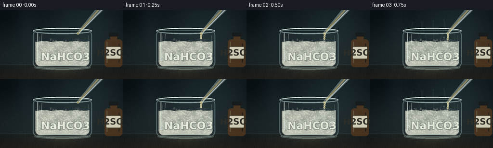
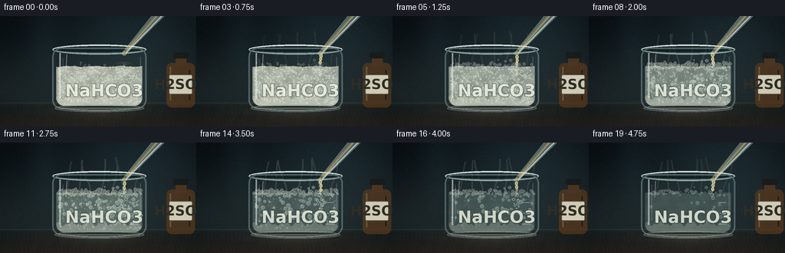
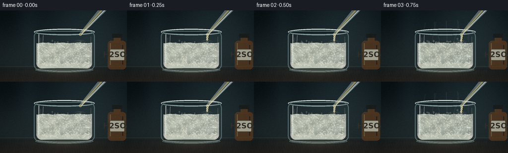

CODING AGENTS AS PIXEL WORLD MODELS
traex/DeepSeek-V4.1-Flash · material_0036
点击播放 · 原生 RGB 像素
逐轮保存的候选
回放视频、检查图与代码变化。
每份候选均可单独播放。实际图片检查记录在下方工具轨迹中。
候选 01播放与检查图
点击播放 · 原生 RGB 像素


展开代码变化
--- 上一保存版本
+++ 本次保存版本
@@ -0,0 +1,667 @@
+"""Procedural timelapse: sulfuric acid added to sodium bicarbonate solution."""
+
+from pathlib import Path
+
+import numpy as np
+from PIL import Image, ImageDraw, ImageFont
+
+import artifact_io
+
+
+CASE_DIR = Path(__file__).resolve().parent
+OUT_W, OUT_H = 256, 144
+SS = 3
+W, H = OUT_W * SS, OUT_H * SS
+FPS = 4.0
+N_FRAMES = 20
+
+FONT_BOLD = "/usr/share/fonts/truetype/dejavu/DejaVuSans-Bold.ttf"
+
+
+def smoothstep(edge0, edge1, value):
+ t = np.clip((value - edge0) / (edge1 - edge0), 0.0, 1.0)
+ return t * t * (3.0 - 2.0 * t)
+
+
+def rgba(color, alpha):
+ return tuple(int(v) for v in color) + (int(np.clip(alpha, 0, 255)),)
+
+
+def composite(base, overlay):
+ """Alpha composite an RGB uint8 image with an RGBA uint8 overlay."""
+ src = np.asarray(overlay, dtype=np.float32)
+ alpha = src[..., 3:4] / 255.0
+ return base * (1.0 - alpha) + src[..., :3] * alpha
+
+
+def ellipse_mask(cx, cy, rx, ry):
+ yy, xx = np.ogrid[:H, :W]
+ return ((xx - cx * SS) / (rx * SS)) ** 2 + ((yy - cy * SS) / (ry * SS)) ** 2 <= 1.0
+
+
+def rounded_mask(x0, y0, x1, y1, radius):
+ mask = Image.new("L", (W, H), 0)
+ draw = ImageDraw.Draw(mask)
+ draw.rounded_rectangle(
+ (round(x0 * SS), round(y0 * SS), round(x1 * SS), round(y1 * SS)),
+ radius=round(radius * SS),
+ fill=255,
+ )
+ return np.asarray(mask, dtype=np.float32) / 255.0
+
+
+def polygon_mask(points):
+ mask = Image.new("L", (W, H), 0)
+ draw = ImageDraw.Draw(mask)
+ draw.polygon([(round(x * SS), round(y * SS)) for x, y in points], fill=255)
+ return np.asarray(mask, dtype=np.float32) / 255.0
+
+
+def background():
+ yy, xx = np.mgrid[0:H, 0:W]
+ x = xx / W
+ y = yy / H
+
+ top = np.array([12, 18, 22], dtype=np.float32)
+ lower = np.array([31, 39, 41], dtype=np.float32)
+ wall_t = smoothstep(0.0, 0.79, y)[..., None]
+ image = top + (lower - top) * wall_t
+
+ # Broad, diffused light from the upper right and a faint window edge.
+ glow = np.exp(-(((x - 0.73) / 0.40) ** 2 + ((y - 0.04) / 0.53) ** 2))
+ image += glow[..., None] * np.array([17, 24, 25], dtype=np.float32)
+ band = np.exp(-((x - 0.22) / 0.085) ** 2) * (1.0 - smoothstep(0.18, 0.83, y))
+ image += band[..., None] * np.array([5, 8, 9], dtype=np.float32)
+
+ # A dark walnut bench provides a warm counterpoint to the glass and liquid.
+ bench_t = smoothstep(0.775, 0.83, y)
+ bench = (
+ np.array([27, 31, 31], dtype=np.float32)
+ + (np.array([42, 37, 32], dtype=np.float32) - np.array([27, 31, 31], dtype=np.float32))
+ * smoothstep(0.82, 1.0, y)[..., None]
+ )
+ grain = (
+ np.sin(x * 310.0 + np.sin(y * 24.0) * 2.4) * 0.55
+ + np.sin(x * 91.0 + y * 18.0) * 0.32
+ )
+ bench += grain[..., None] * np.array([2.5, 2.0, 1.4], dtype=np.float32)
+ image = image * (1.0 - bench_t[..., None]) + bench * bench_t[..., None]
+
+ # Soft reflected light and tabletop horizon.
+ reflection = np.exp(-(((x - 0.50) / 0.30) ** 2 + ((y - 0.84) / 0.055) ** 2))
+ image += reflection[..., None] * np.array([17, 14, 10], dtype=np.float32)
+ horizon = np.exp(-((y - 0.786) / 0.0035) ** 2)
+ image += horizon[..., None] * np.array([17, 20, 19], dtype=np.float32)
+
+ # Vignette keeps the eye on the beaker.
+ vignette = np.clip(((x - 0.5) / 0.58) ** 2 + ((y - 0.53) / 0.61) ** 2, 0.0, 1.2)
+ image *= 1.0 - 0.23 * vignette[..., None]
+ return np.clip(image, 0, 255)
+
+
+def draw_acid_bottle(base):
+ overlay = Image.new("RGBA", (W, H), (0, 0, 0, 0))
+ draw = ImageDraw.Draw(overlay)
+
+ # Amber reagent bottle, slightly cropped at right for depth.
+ body = (217, 61, 254, 119)
+ draw.rounded_rectangle(
+ tuple(round(v * SS) for v in body), radius=7 * SS, fill=(91, 56, 27, 175)
+ )
+ draw.rectangle((229 * SS, 52 * SS, 243 * SS, 65 * SS), fill=(92, 58, 30, 185))
+ draw.rounded_rectangle(
+ (226 * SS, 47 * SS, 246 * SS, 55 * SS), radius=2 * SS, fill=(25, 26, 25, 235)
+ )
+ draw.line(
+ [(222 * SS, 66 * SS), (222 * SS, 110 * SS)],
+ fill=(222, 167, 92, 92),
+ width=2 * SS,
+ )
+ draw.line(
+ [(247 * SS, 70 * SS), (247 * SS, 109 * SS)],
+ fill=(46, 24, 13, 125),
+ width=2 * SS,
+ )
+
+ # Paper label with the acid identity.
+ draw.rounded_rectangle(
+ (220 * SS, 76 * SS, 251 * SS, 102 * SS),
+ radius=2 * SS,
+ fill=(226, 220, 195, 225),
+ outline=(105, 94, 75, 150),
+ width=1 * SS,
+ )
+ font = ImageFont.truetype(FONT_BOLD, 18 * SS)
+ text = "H2SO4"
+ box = draw.textbbox((0, 0), text, font=font)
+ tw, th = box[2] - box[0], box[3] - box[1]
+ draw.text(
+ ((235 * SS) - tw / 2, (87 * SS) - th / 2 - 2 * SS),
+ text,
+ font=font,
+ fill=(48, 45, 37, 235),
+ )
+ return composite(base, overlay)
+
+
+def liquid_mask(t):
+ interior = rounded_mask(73.5, 44.0, 185.5, 116.8, 10.0)
+ yy, xx = np.mgrid[0:H, 0:W]
+ xo = xx / SS
+ surface = 65.4 + 0.55 * np.sin(xo * 0.19 + t * 2.2) + 0.22 * np.sin(xo * 0.43 - t * 4.0)
+ below = yy / SS >= surface
+ surface_center = 65.4 + 0.55 * np.sin(127.0 * 0.19 + t * 2.2) + 0.22 * np.sin(
+ 127.0 * 0.43 - t * 4.0
+ )
+ return interior * below.astype(np.float32), float(surface_center)
+
+
+def add_liquid(base, t, surface):
+ mask, _ = liquid_mask(t)
+ yy, xx = np.mgrid[0:H, 0:W]
+ xo = xx / SS
+ yo = yy / SS
+ clarity = smoothstep(0.04, 0.90, t)
+ particle_visibility = 1.0 - 0.92 * smoothstep(0.08, 0.86, t)
+
+ # Cloudy suspension resolves toward a clearer pale solution.
+ cloudy = np.array([221, 222, 205], dtype=np.float32)
+ clear = np.array([139, 169, 157], dtype=np.float32)
+ liquid_color = cloudy * (1.0 - clarity) + clear * clarity
+ liquid_alpha = 0.78 * (1.0 - clarity) + 0.28 * clarity
+
+ texture = (
+ 0.52
+ + 0.22 * np.sin(xo * 0.14 + yo * 0.23 + t * 2.1)
+ + 0.16 * np.sin(xo * 0.37 - yo * 0.16 - t * 4.4)
+ + 0.10 * np.sin(yo * 0.71 + t * 7.2)
+ )
+ texture = np.clip(texture, 0.0, 1.0)
+ tint = liquid_color[None, None, :] * (0.92 + 0.12 * texture[..., None])
+ alpha = mask * liquid_alpha * (0.88 + 0.12 * texture)
+
+ # Brighter left shoulder and darker bottom create cylindrical volume.
+ radial = np.clip(1.0 - ((xo - 99.0) / 91.0) ** 2, 0.0, 1.0)
+ tint += radial[..., None] * np.array([14, 16, 12], dtype=np.float32)
+ depth = smoothstep(78.0, 116.0, yo)
+ tint -= depth[..., None] * np.array([14, 11, 8], dtype=np.float32)
+ base = base * (1.0 - alpha[..., None]) + tint * alpha[..., None]
+
+ # Settled bicarbonate powder, eroding from the top as acid mixes in.
+ sediment_amount = 1.0 - 0.90 * smoothstep(0.10, 0.87, t)
+ sed_top = 105.5 + 2.1 * np.sin(xo * 0.31 + 0.8) + 1.4 * np.sin(xo * 0.73 - 1.2)
+ sediment = (yo >= sed_top) & (mask > 0.05)
+ sediment_alpha = sediment.astype(np.float32) * mask * (0.20 + 0.42 * sediment_amount)
+ base = base * (1.0 - sediment_alpha[..., None]) + np.array(
+ [205, 205, 189], dtype=np.float32
+ ) * sediment_alpha[..., None]
+
+ # Suspended grains disappear progressively rather than all at once.
+ rng = np.random.default_rng(7361)
+ grain_overlay = Image.new("RGBA", (W, H), (0, 0, 0, 0))
+ draw = ImageDraw.Draw(grain_overlay)
+ count = 620
+ gx = rng.uniform(76.0, 183.0, count)
+ gy = rng.uniform(66.0, 114.0, count)
+ gr = rng.uniform(0.25, 1.10, count)
+ life = rng.uniform(0.16, 1.0, count)
+ phase = rng.uniform(0.0, 2.0 * np.pi, count)
+ visible = life > t
+ for px, py, pr, ph, show in zip(gx, gy, gr, phase, visible):
+ if not show or particle_visibility < 0.03:
+ continue
+ drift_x = 0.7 * np.sin(t * 5.0 + ph)
+ drift_y = 0.5 * np.cos(t * 3.7 + ph)
+ a = int(95 * particle_visibility + 25)
+ draw.ellipse(
+ (
+ round((px + drift_x - pr) * SS),
+ round((py + drift_y - pr) * SS),
+ round((px + drift_x + pr) * SS),
+ round((py + drift_y + pr) * SS),
+ ),
+ fill=(242, 241, 221, a),
+ )
+ base = composite(base, grain_overlay)
+
+ return base, clarity
+
+
+def add_bubbles(base, t, surface):
+ surface = float(np.asarray(surface))
+ activity = 0.12 + 0.94 * np.sin(np.pi * np.clip((t + 0.05) / 0.97, 0.0, 1.0)) ** 0.72
+ overlay = Image.new("RGBA", (W, H), (0, 0, 0, 0))
+ draw = ImageDraw.Draw(overlay)
+
+ rng = np.random.default_rng(202603)
+ count = 145
+ x0 = rng.uniform(77.0, 183.0, count)
+ y0 = rng.uniform(91.0, 115.0, count)
+ radius = rng.uniform(0.75, 3.15, count)
+ birth = rng.uniform(0.0, 0.92, count)
+ duration = rng.uniform(0.34, 0.92, count)
+ phase = rng.uniform(0.0, 2.0 * np.pi, count)
+ gate = rng.uniform(0.0, 1.0, count)
+
+ for bx, by, br, b0, dur, ph, g in zip(x0, y0, radius, birth, duration, phase, gate):
+ age = (t - b0) / dur
+ if age <= 0.0 or age >= 1.0 or g > activity:
+ continue
+ envelope = np.sin(np.pi * age)
+ y = by + (surface + 2.0 - by) * age + 0.9 * np.sin(age * 8.0 + ph)
+ x = bx + (1.1 + 0.8 * br) * np.sin(age * 10.0 + ph)
+ rr = br * (0.78 + 0.24 * envelope)
+ alpha = int(42 + 105 * envelope * min(activity, 1.0))
+ draw.ellipse(
+ (
+ round((x - rr) * SS),
+ round((y - rr) * SS),
+ round((x + rr) * SS),
+ round((y + rr) * SS),
+ ),
+ fill=(188, 218, 205, min(75, alpha)),
+ outline=(236, 247, 229, alpha),
+ width=max(1, round(0.55 * SS)),
+ )
+ draw.ellipse(
+ (
+ round((x - rr * 0.38) * SS),
+ round((y - rr * 0.48) * SS),
+ round((x - rr * 0.06) * SS),
+ round((y - rr * 0.16) * SS),
+ ),
+ fill=(250, 253, 242, min(200, alpha + 40)),
+ )
+
+ # Fine bubble stream at the acid impact point.
+ for j in range(14):
+ phase = (t * 2.6 + j * 0.137) % 1.0
+ if phase > activity * 0.9:
+ continue
+ x = 161.0 + 3.2 * np.sin(j * 2.3 + t * 9.0)
+ y = surface + 1.5 + phase * 44.0
+ rr = 0.7 + 1.25 * (1.0 - phase)
+ draw.ellipse(
+ (
+ round((x - rr) * SS),
+ round((y - rr) * SS),
+ round((x + rr) * SS),
+ round((y + rr) * SS),
+ ),
+ outline=(234, 244, 226, 145),
+ width=max(1, round(0.5 * SS)),
+ )
+ return composite(base, overlay), activity
+
+
+def add_foam(base, t, surface, activity):
+ foam_amount = 0.05 + 0.84 * smoothstep(0.08, 0.46, t) * (
+ 1.0 - 0.67 * smoothstep(0.68, 1.0, t)
+ )
+ overlay = Image.new("RGBA", (W, H), (0, 0, 0, 0))
+ draw = ImageDraw.Draw(overlay)
+
+ # Irregular cream-colored foam band.
+ rng = np.random.default_rng(4701)
+ count = 190
+ fx = rng.uniform(76.0, 184.0, count)
+ fy = rng.normal(0.0, 1.0, count)
+ fr = rng.uniform(0.55, 2.55, count)
+ phase = rng.uniform(0.0, 2.0 * np.pi, count)
+ order = rng.permutation(count)
+ shown = int(count * foam_amount)
+ for idx in order[:shown]:
+ x = fx[idx] + 0.8 * np.sin(t * 6.0 + phase[idx])
+ y = surface - 1.2 + fy[idx] * 2.3
+ rr = fr[idx] * (0.72 + 0.20 * foam_amount)
+ alpha = int(80 + 95 * foam_amount)
+ draw.ellipse(
+ (
+ round((x - rr) * SS),
+ round((y - rr) * SS),
+ round((x + rr) * SS),
+ round((y + rr) * SS),
+ ),
+ fill=(224, 226, 208, min(95, alpha // 2)),
+ outline=(246, 248, 229, alpha),
+ width=max(1, round(0.48 * SS)),
+ )
+
+ # Impact ripple and a small rising splash collar.
+ if activity > 0.25:
+ for k in range(3):
+ spread = 5.0 + k * 3.5
+ draw.arc(
+ (
+ round((161.0 - spread) * SS),
+ round((surface - 3.0 - k) * SS),
+ round((161.0 + spread) * SS),
+ round((surface + 4.0 + k) * SS),
+ ),
+ start=195,
+ end=345,
+ fill=(244, 245, 223, int(45 + 48 * activity)),
+ width=max(1, round(0.45 * SS)),
+ )
+ return composite(base, overlay), foam_amount
+
+
+def add_gas_wisps(base, t, surface, gas_strength):
+ if gas_strength <= 0.03:
+ return base
+ overlay = Image.new("RGBA", (W, H), (0, 0, 0, 0))
+ draw = ImageDraw.Draw(overlay)
+ rng = np.random.default_rng(1219)
+ starts = np.linspace(88.0, 176.0, 7)
+ for i, sx in enumerate(starts):
+ phase = t * (0.75 + 0.08 * i) + i * 0.39
+ x_shift = 2.6 * np.sin(phase * 2.1 + i)
+ top_x = sx + 8.0 * np.sin(phase + i * 1.7) + x_shift
+ top_y = 22.0 + rng.uniform(-3.0, 5.0)
+ ctrl1 = (sx + 3.0 * np.sin(phase * 1.3), surface - 12.0)
+ ctrl2 = (top_x - 5.0 * np.cos(phase), 40.0)
+ points = []
+ for u in np.linspace(0.0, 1.0, 20):
+ x = (
+ (1 - u) ** 3 * sx
+ + 3 * (1 - u) ** 2 * u * ctrl1[0]
+ + 3 * (1 - u) * u**2 * ctrl2[0]
+ + u**3 * top_x
+ )
+ y = (
+ (1 - u) ** 3 * (surface - 1.0)
+ + 3 * (1 - u) ** 2 * u * ctrl1[1]
+ + 3 * (1 - u) * u**2 * ctrl2[1]
+ + u**3 * top_y
+ )
+ points.append((round(x * SS), round(y * SS)))
+ alpha = int((15 + 26 * gas_strength) * (0.65 + 0.35 * np.sin(phase) ** 2))
+ draw.line(points, fill=(188, 205, 198, alpha), width=2 * SS, joint="curve")
+ return composite(base, overlay)
+
+
+def add_glass(base):
+ yy, xx = np.mgrid[0:H, 0:W]
+ xo = xx / SS
+ yo = yy / SS
+ body = rounded_mask(68.0, 41.0, 191.0, 121.5, 12.0)
+ inner = rounded_mask(73.5, 44.0, 185.5, 116.8, 10.0)
+
+ # Glass body tint, darker toward the right edge.
+ side = np.clip((xo - 73.0) / 118.0, 0.0, 1.0)
+ tint = np.array([112, 137, 137], dtype=np.float32) - side[..., None] * np.array(
+ [34, 28, 23], dtype=np.float32
+ )
+ body_alpha = body * (0.055 + 0.035 * side)
+ base = base * (1.0 - body_alpha[..., None]) + tint * body_alpha[..., None]
+
+ overlay = Image.new("RGBA", (W, H), (0, 0, 0, 0))
+ draw = ImageDraw.Draw(overlay)
+
+ # Open mouth and elliptical rim.
+ draw.ellipse(
+ (68 * SS, 37 * SS, 191 * SS, 50 * SS),
+ fill=(14, 23, 25, 150),
+ outline=(180, 203, 198, 185),
+ width=2 * SS,
+ )
+ draw.arc(
+ (68 * SS, 37 * SS, 191 * SS, 50 * SS),
+ start=190,
+ end=350,
+ fill=(231, 241, 234, 225),
+ width=2 * SS,
+ )
+ draw.arc(
+ (70 * SS, 39 * SS, 189 * SS, 48 * SS),
+ start=12,
+ end=168,
+ fill=(77, 101, 102, 190),
+ width=1 * SS,
+ )
+
+ # Outer silhouette and base.
+ draw.rounded_rectangle(
+ (68 * SS, 41 * SS, 191 * SS, 121 * SS),
+ radius=12 * SS,
+ outline=(132, 160, 158, 120),
+ width=2 * SS,
+ )
+ draw.ellipse(
+ (71 * SS, 115 * SS, 188 * SS, 125 * SS),
+ outline=(142, 168, 163, 110),
+ width=2 * SS,
+ )
+ draw.arc(
+ (73 * SS, 112 * SS, 186 * SS, 123 * SS),
+ start=8,
+ end=172,
+ fill=(215, 228, 217, 150),
+ width=1 * SS,
+ )
+
+ # Long specular strokes and a soft reflected pane.
+ draw.line(
+ [(78 * SS, 48 * SS), (78 * SS, 107 * SS)],
+ fill=(232, 242, 237, 140),
+ width=2 * SS,
+ )
+ draw.line(
+ [(82 * SS, 55 * SS), (82 * SS, 101 * SS)],
+ fill=(190, 217, 210, 55),
+ width=1 * SS,
+ )
+ draw.line(
+ [(183 * SS, 53 * SS), (183 * SS, 109 * SS)],
+ fill=(184, 207, 200, 70),
+ width=1 * SS,
+ )
+ draw.line(
+ [(87 * SS, 50 * SS), (86 * SS, 71 * SS)],
+ fill=(244, 249, 241, 105),
+ width=1 * SS,
+ )
+
+ # Graduation ticks.
+ for ty in (78.0, 92.0, 106.0):
+ draw.line(
+ [(169 * SS, round(ty * SS)), (179 * SS, round(ty * SS))],
+ fill=(224, 235, 226, 105),
+ width=1 * SS,
+ )
+ draw.line(
+ [(173 * SS, 92 * SS), (179 * SS, 92 * SS)],
+ fill=(235, 243, 234, 155),
+ width=2 * SS,
+ )
+
+ # Small beaker label, offset like a real lab marker.
+ font = ImageFont.truetype(FONT_BOLD, 22 * SS)
+ draw.text(
+ (85 * SS, 84 * SS),
+ "NaHCO3",
+ font=font,
+ fill=(236, 241, 225, 205),
+ stroke_width=1 * SS,
+ stroke_fill=(35, 46, 43, 95),
+ )
+ base = composite(base, overlay)
+
+ # Thin dark interior edge helps the liquid read as glass-contained.
+ edge = np.clip(np.abs(xo - 74.5) - 0.0, 0.0, 1.0)
+ left_edge = (inner > 0.05) & (edge < 1.0) & (yo > 48.0)
+ base[left_edge] *= 0.90
+ return base
+
+
+def add_pipette(base, t, surface, activity):
+ overlay = Image.new("RGBA", (W, H), (0, 0, 0, 0))
+ draw = ImageDraw.Draw(overlay)
+
+ # Diagonal glass pipette, entering from above the frame.
+ a = np.array([216.0, -12.0])
+ b = np.array([161.5, 48.5])
+ d = b - a
+ d /= np.linalg.norm(d)
+ p = np.array([-d[1], d[0]])
+ half_top, half_tip = 7.2, 2.4
+ pts = [
+ tuple(a + p * half_top),
+ tuple(a - p * half_top),
+ tuple(b - p * half_tip),
+ tuple(b + p * half_tip),
+ ]
+ draw.polygon(
+ [(round(x * SS), round(y * SS)) for x, y in pts],
+ fill=(151, 177, 176, 112),
+ outline=(206, 225, 217, 190),
+ )
+ draw.line(
+ [
+ (round((a[0] - p[0] * 4.5) * SS), round((a[1] - p[1] * 4.5) * SS)),
+ (round((b[0] - p[0] * 1.0) * SS), round((b[1] - p[1] * 1.0) * SS)),
+ ],
+ fill=(239, 247, 239, 180),
+ width=2 * SS,
+ )
+
+ # Acid inside the pipette.
+ ia = a + d * 8.0
+ ib = b - d * 5.0
+ draw.line(
+ [
+ (round((ia[0] + p[0] * 1.2) * SS), round((ia[1] + p[1] * 1.2) * SS)),
+ (round((ib[0] + p[0] * 0.8) * SS), round((ib[1] + p[1] * 0.8) * SS)),
+ ],
+ fill=(205, 184, 111, 185),
+ width=3 * SS,
+ )
+ draw.line(
+ [
+ (round((ia[0] + p[0] * 2.2) * SS), round((ia[1] + p[1] * 2.2) * SS)),
+ (round((ib[0] + p[0] * 1.1) * SS), round((ib[1] + p[1] * 1.1) * SS)),
+ ],
+ fill=(241, 229, 181, 95),
+ width=1 * SS,
+ )
+ draw.ellipse(
+ (159 * SS, 46 * SS, 165 * SS, 51 * SS),
+ fill=(187, 164, 91, 150),
+ outline=(228, 216, 166, 155),
+ width=1 * SS,
+ )
+
+ # Continuous dosing stream begins after the first visible droplet.
+ stream_strength = smoothstep(0.04, 0.16, t) * (1.0 - smoothstep(0.79, 0.94, t))
+ if stream_strength > 0.03:
+ points = []
+ for u in np.linspace(0.0, 1.0, 18):
+ x = 162.0 + 0.55 * np.sin(u * 8.0 + t * 8.0) * (1.0 - u)
+ y = 48.0 + u * (surface - 48.0)
+ points.append((round(x * SS), round(y * SS)))
+ draw.line(
+ points,
+ fill=(216, 200, 140, int(125 * stream_strength)),
+ width=2 * SS,
+ joint="curve",
+ )
+ draw.line(
+ points,
+ fill=(246, 237, 196, int(105 * stream_strength)),
+ width=1 * SS,
+ joint="curve",
+ )
+
+ # Several droplets make the dosing action legible even at 4 fps.
+ for k in range(3):
+ phase = (t * 1.15 + k * 0.31) % 1.0
+ if t < 0.02 or phase > 0.94:
+ continue
+ y = 49.0 + phase * (surface - 51.0)
+ x = 162.0 + 0.55 * np.sin(phase * 9.0 + k * 2.1)
+ r = 1.7 + 0.35 * (1.0 - phase)
+ draw.ellipse(
+ (
+ round((x - r) * SS),
+ round((y - r * 1.35) * SS),
+ round((x + r) * SS),
+ round((y + r * 1.35) * SS),
+ ),
+ fill=(208, 190, 123, 185),
+ outline=(246, 237, 196, 210),
+ width=1 * SS,
+ )
+
+ # Tiny white splash crown at the liquid surface.
+ if activity > 0.28 and t < 0.86:
+ for k in range(4):
+ angle = -1.55 + (k - 1.5) * 0.38
+ length = 2.4 + 1.2 * np.sin(t * 11.0 + k)
+ x1 = 162.0 + np.cos(angle) * 1.5
+ y1 = surface + 0.5
+ x2 = x1 + np.cos(angle) * length
+ y2 = y1 + np.sin(angle) * length
+ draw.line(
+ [(round(x1 * SS), round(y1 * SS)), (round(x2 * SS), round(y2 * SS))],
+ fill=(242, 244, 224, int(110 * activity)),
+ width=1 * SS,
+ )
+ return composite(base, overlay)
+
+
+def add_table_shadow(base):
+ yy, xx = np.mgrid[0:H, 0:W]
+ x = xx / W
+ y = yy / H
+ shadow = np.exp(-(((x - 0.505) / 0.185) ** 2 + ((y - 0.825) / 0.033) ** 2))
+ base *= 1.0 - 0.36 * shadow[..., None]
+
+ reflection = np.exp(-(((x - 0.51) / 0.14) ** 2 + ((y - 0.86) / 0.08) ** 2))
+ base += reflection[..., None] * np.array([10, 8, 5], dtype=np.float32)
+ return base
+
+
+def finish_image(base, frame_index):
+ image = Image.fromarray(np.clip(base, 0, 255).astype(np.uint8), "RGB")
+ image = image.resize((OUT_W, OUT_H), Image.Resampling.LANCZOS)
+ arr = np.asarray(image, dtype=np.float32)
+
+ # Restrained highlight lift and shadow tint, applied after downsampling.
+ arr = arr * 1.025
+ shadow = np.clip(1.0 - arr.mean(axis=2, keepdims=True) / 120.0, 0.0, 1.0)
+ arr += shadow * np.array([-1.0, 1.5, 2.0], dtype=np.float32)
+
+ # Fixed fine grain avoids a synthetic, perfectly clean look.
+ rng = np.random.default_rng(9000 + frame_index)
+ grain = rng.normal(0.0, 1.15, (OUT_H, OUT_W, 1)).astype(np.float32)
+ arr += grain
+ return np.clip(arr, 0, 255).astype(np.uint8)
+
+
+def render_frame(frame_index):
+ t = frame_index / (N_FRAMES - 1)
+ base = background()
+ base = draw_acid_bottle(base)
+ base = add_table_shadow(base)
+ mask, surface = liquid_mask(t)
+ base, clarity = add_liquid(base, t, surface)
+ base, activity = add_bubbles(base, t, surface)
+ base, foam = add_foam(base, t, surface, activity)
+ gas_strength = smoothstep(0.10, 0.52, t) * (1.0 - 0.48 * smoothstep(0.73, 1.0, t))
+ base = add_gas_wisps(base, t, surface, gas_strength)
+ base = add_glass(base)
+ base = add_pipette(base, t, surface, activity)
+ return finish_image(base, frame_index)
+
+
+def main():
+ frames = np.stack([render_frame(i) for i in range(N_FRAMES)], axis=0)
+ artifact_io.save(frames, CASE_DIR)
+ print(
+ f"Rendered {len(frames)} frames at {OUT_W}x{OUT_H}, "
+ f"{FPS:g} fps, saved to {CASE_DIR}"
+ )
+
+
+if __name__ == "__main__":
+ main()
候选 02播放与检查图
点击播放 · 原生 RGB 像素

展开代码变化
--- 上一保存版本
+++ 本次保存版本
@@ -125,18 +125,18 @@
# Paper label with the acid identity.
draw.rounded_rectangle(
- (220 * SS, 76 * SS, 251 * SS, 102 * SS),
+ (221 * SS, 78 * SS, 251 * SS, 101 * SS),
radius=2 * SS,
- fill=(226, 220, 195, 225),
- outline=(105, 94, 75, 150),
- width=1 * SS,
- )
- font = ImageFont.truetype(FONT_BOLD, 18 * SS)
+ fill=(207, 201, 178, 185),
+ outline=(102, 91, 72, 135),
+ width=1 * SS,
+ )
+ font = ImageFont.truetype(FONT_BOLD, 15 * SS)
text = "H2SO4"
box = draw.textbbox((0, 0), text, font=font)
tw, th = box[2] - box[0], box[3] - box[1]
draw.text(
- ((235 * SS) - tw / 2, (87 * SS) - th / 2 - 2 * SS),
+ ((236 * SS) - tw / 2, (88 * SS) - th / 2 - 2 * SS),
text,
font=font,
fill=(48, 45, 37, 235),
@@ -475,16 +475,6 @@
width=2 * SS,
)
- # Small beaker label, offset like a real lab marker.
- font = ImageFont.truetype(FONT_BOLD, 22 * SS)
- draw.text(
- (85 * SS, 84 * SS),
- "NaHCO3",
- font=font,
- fill=(236, 241, 225, 205),
- stroke_width=1 * SS,
- stroke_fill=(35, 46, 43, 95),
- )
base = composite(base, overlay)
# Thin dark interior edge helps the liquid read as glass-contained.
候选 03播放与检查图
候选 04播放与检查图
点击播放 · 原生 RGB 像素

展开代码变化
--- 上一保存版本
+++ 本次保存版本
@@ -166,9 +166,9 @@
# Cloudy suspension resolves toward a clearer pale solution.
cloudy = np.array([221, 222, 205], dtype=np.float32)
- clear = np.array([139, 169, 157], dtype=np.float32)
+ clear = np.array([158, 184, 169], dtype=np.float32)
liquid_color = cloudy * (1.0 - clarity) + clear * clarity
- liquid_alpha = 0.78 * (1.0 - clarity) + 0.28 * clarity
+ liquid_alpha = 0.78 * (1.0 - clarity) + 0.34 * clarity
texture = (
0.52
@@ -296,7 +296,7 @@
def add_foam(base, t, surface, activity):
foam_amount = 0.05 + 0.84 * smoothstep(0.08, 0.46, t) * (
- 1.0 - 0.67 * smoothstep(0.68, 1.0, t)
+ 1.0 - 0.58 * smoothstep(0.68, 1.0, t)
)
overlay = Image.new("RGBA", (W, H), (0, 0, 0, 0))
draw = ImageDraw.Draw(overlay)
候选 05播放与检查图
候选 06播放与检查图
点击播放 · 原生 RGB 像素

展开代码变化
--- 上一保存版本
+++ 本次保存版本
@@ -1,6 +1,7 @@
"""Procedural timelapse: sulfuric acid added to sodium bicarbonate solution."""
from pathlib import Path
+import time
import numpy as np
from PIL import Image, ImageDraw, ImageFont
@@ -612,7 +613,7 @@
def finish_image(base, frame_index):
- image = Image.fromarray(np.clip(base, 0, 255).astype(np.uint8), "RGB")
+ image = Image.fromarray(np.clip(base, 0, 255).astype(np.uint8))
image = image.resize((OUT_W, OUT_H), Image.Resampling.LANCZOS)
arr = np.asarray(image, dtype=np.float32)
@@ -646,7 +647,14 @@
def main():
frames = np.stack([render_frame(i) for i in range(N_FRAMES)], axis=0)
- artifact_io.save(frames, CASE_DIR)
+ for attempt in range(5):
+ try:
+ artifact_io.save(frames, CASE_DIR)
+ break
+ except OSError:
+ if attempt == 4:
+ raise
+ time.sleep(0.5 * (attempt + 1))
print(
f"Rendered {len(frames)} frames at {OUT_W}x{OUT_H}, "
f"{FPS:g} fps, saved to {CASE_DIR}"
可观测工具轨迹
实际执行的命令与返回图片。
命令 1exit 0
/bin/bash -c "sed -n '1,240p' prompt.txt"
命令 2exit 0
/bin/bash -c "sed -n '1,260p' GENERATION_RULES.md"
命令 3exit 0
/bin/bash -c 'cat task_spec.json'
命令 4exit 0
/bin/bash -c "find . -maxdepth 3 -type f -printf '%p\\n' | sort | sed -n '1,240p'"
命令 5exit 0
/bin/bash -c "sed -n '1,260p' artifact_io.py"
命令 6exit 0
/bin/bash -c "sed -n '1,220p' player_template.html"
命令 7exit 0
/bin/bash -c "python - <<'PY' import importlib.util for m in ['numpy','PIL','cv2','imageio','matplotlib','scipy']: print(m, bool(importlib.util.find_spec(m))) PY"
命令 8exit 0
/bin/bash -c 'command -v chafa || true; command -v viu || true; command -v img2txt || true; command -v ffmpeg || true'
命令 9exit 0
/bin/bash -c "python - <<'PY' import importlib.util for m in ['imageio_ffmpeg','av']: print(m, bool(importlib.util.find_spec(m))) PY fc-list | head -20"
命令 10exit 1
/bin/bash -c 'python generate.py'
命令 11exit 1
/bin/bash -c 'python generate.py'
命令 12exit 0
/bin/bash -c "nl -ba generate.py | sed -n '255,295p'"
命令 13exit 1
/bin/bash -c 'python generate.py'
命令 14exit 0
/bin/bash -c 'python generate.py'
命令 15exit 0
/bin/bash -c "python - <<'PY'
from PIL import Image
import numpy as np
im=np.asarray(Image.open('inspection.png'))
# Crop first 256x144 frame and upscale for a terminal-friendly sixel-free diagnostic.
Image.fromarray(im[21:165,0:256]).resize((768,432),Image.Resampling.NEAREST).save('.tmp/frame0_big.png')
Image.open('frames/10.png').resize((768,432),Image.Resampling.NEAREST).save('.tmp/frame10_big.png')
Image.open('frames/19.png').resize((768,432),Image.Resampling.NEAREST).save('.tmp/frame19_big.png')
for i in [0,5,10,15,19]:
a=np.asarray(Image.open(f'frames/{i:02d}.png')).astype(float)
print(i, a.mean(axis=(0,1)).round(1), a.std().round(1), a.min(), a.max())
PY"命令 16exit 0
/bin/bash -c "python - <<'PY'
from PIL import Image
im=Image.open('inspection.png')
# Make an enlarged crop of the central beaker area from the contact sheet.
im.crop((0,21,1024,165)).resize((1024,144),Image.Resampling.NEAREST).save('.tmp/inspection_strip.png')
print(im.size)
PY"命令 17exit 0
/bin/bash -c "python - <<'PY'
from PIL import Image
import numpy as np
chars=' .:-=+*#%@'
for fi in [0,5,10,15,19]:
im=np.asarray(Image.open(f'frames/{fi:02d}.png').convert('L').resize((80,45),Image.Resampling.BOX))
print('\\nFRAME',fi)
for row in im:
print(''.join(chars[min(len(chars)-1,int(v/256*len(chars)))] for v in row))
PY"命令 18exit 0
/bin/bash -c "python - <<'PY'
from PIL import Image
im=Image.open('inspection.png')
print('inspection',im.size)
# Build a diagnostic sheet with central beaker crops at 2x and labels.
canvas=Image.new('RGB',(4*300,2*190),(24,24,24))
for i,fi in enumerate([0,5,10,15,19,3,8,12]):
f=Image.open(f'frames/{fi:02d}.png').crop((55,25,220,135)).resize((495,330),Image.Resampling.NEAREST)
# thumbnail
f.thumbnail((300,150),Image.Resampling.NEAREST)
x=(i%4)*300;y=(i//4)*190
canvas.paste(f,(x,y+25))
canvas.save('.tmp/diagnostic.png')
PY"命令 19exit 0
/bin/bash -c "python - <<'PY'
import numpy as np
from PIL import Image
fs=np.stack([np.asarray(Image.open(f'frames/{i:02d}.png')).astype(np.float32) for i in range(20)])
d=np.abs(np.diff(fs,axis=0)).mean(axis=(1,2,3))
print('mean frame diff:',np.round(d,2))
print('center liquid means:')
for i in [0,4,8,12,16,19]:
a=fs[i,68:116,78:181]
print(i, a.mean(axis=(0,1)).round(1), 'std',a.std().round(1))
# green/white regions change analysis
print('center bright px counts (>190 mean):')
for i in [0,4,8,12,16,19]:
a=fs[i,60:116,78:181].mean(2)
print(i, int((a>190).sum()), int((a>150).sum()))
PY"命令 20exit 0
/bin/bash -c "python - <<'PY'
from PIL import Image
import numpy as np
im=Image.open('frames/10.png').convert('RGB').resize((64,36),Image.Resampling.BOX)
a=np.asarray(im)
for y in range(0,36,2):
s=''
for x in range(64):
r,g,b=a[y,x]
# ANSI truecolor background with upper half block; foreground lower pixel
s+=f'\\x1b[48;2;{r};{g};{b}m\\x1b[38;2;{a[min(y+1,35),x,0]};{a[min(y+1,35),x,1]};{a[min(y+1,35),x,2]}mâ'
print(s+'\\x1b[0m')
PY"命令 21exit 0
/bin/bash -c "python - <<'PY'
from PIL import Image
import numpy as np
for fi in [0,10,19]:
im=Image.open(f'frames/{fi:02d}.png').convert('RGB').resize((80,45),Image.Resampling.BOX)
a=np.asarray(im)
print('\\nCOLOR',fi)
chars=' .:-=+*#%@'
# saturation and hue summaries in a clean luminance grid with bottle/beaker labels omitted
for y in range(0,45):
s=''
for x in range(80):
r,g,b=a[y,x].astype(int)
l=(r*299+g*587+b*114)//1000
if r>g*1.18 and g>b*1.15: c='O' if l>65 else 'o' # amber
elif l>190: c='@'
elif l>150: c='#'
elif l>115: c='*'
elif l>80: c='+'
elif l>55: c='-'
elif l>35: c='.'
else: c=' '
s+=c
print(s)
PY"命令 22exit 0
/bin/bash -c 'mkdir -p .tmp/candidate_v1 && cp -a frames inspection.png transition_check.png pixels.npz index.html .tmp/candidate_v1/ && du -sh .tmp/candidate_v1'
命令 23exit 0
/bin/bash -c 'python generate.py'
命令 24exit 0
/bin/bash -c "python - <<'PY'
from PIL import Image
import numpy as np
chars=' .:-=+*#%@'
for fi in [0,10,19]:
im=np.asarray(Image.open(f'frames/{fi:02d}.png').convert('L').resize((80,45),Image.Resampling.BOX))
print('\\nFRAME',fi)
for row in im:
print(''.join(chars[min(len(chars)-1,int(v/256*len(chars)))] for v in row))
PY"命令 25exit 0
/bin/bash -c "python - <<'PY'
import numpy as np
from PIL import Image
fs=np.stack([np.asarray(Image.open(f'frames/{i:02d}.png')).astype(np.float32) for i in range(20)])
for i in [0,4,8,12,16,19]:
a=fs[i,68:116,78:181]
print(i,'liquid mean',a.mean(axis=(0,1)).round(1),'std',a.std().round(1),'dark%',round(float((a.mean(2)<60).mean()*100),1),'bright%',round(float((a.mean(2)>150).mean()*100),1))
print('frame diff',np.round(np.abs(np.diff(fs,axis=0)).mean(axis=(1,2,3)),2))
PY"命令 26exit 0
/bin/bash -c 'python generate.py'
命令 27exit 0
/bin/bash -c "python - <<'PY'
from PIL import Image
import numpy as np
fs=np.stack([np.asarray(Image.open(f'frames/{i:02d}.png')).astype(np.float32) for i in range(20)])
for i in [0,4,8,12,16,19]:
a=fs[i,68:116,78:181]
print(i,'liquid mean',a.mean(axis=(0,1)).round(1),'std',a.std().round(1),'dark%',round(float((a.mean(2)<60).mean()*100),1),'bright%',round(float((a.mean(2)>150).mean()*100),1))
print('frame diff',np.round(np.abs(np.diff(fs,axis=0)).mean(axis=(1,2,3)),2))
PY"命令 28exit 0
/bin/bash -c "mkdir -p .tmp/candidate_v2 && cp -a frames inspection.png transition_check.png pixels.npz index.html .tmp/candidate_v2/ && python - <<'PY'
from PIL import Image
import numpy as np
# Focused beaker crop sequence; also print edge/color evidence for validation.
for fi in [0,5,10,15,19]:
im=Image.open(f'frames/{fi:02d}.png')
im.crop((62,32,200,128)).resize((552,384),Image.Resampling.NEAREST).save(f'.tmp/beaker_{fi:02d}.png')
print('saved crops')
PY"命令 29exit 0
/bin/bash -c "python - <<'PY'
from PIL import Image
import numpy as np
for fi in [0,10,19]:
im=Image.open(f'frames/{fi:02d}.png').convert('RGB').crop((55,25,220,135)).resize((66,44),Image.Resampling.BOX)
a=np.asarray(im)
print('\\nFRAME',fi)
for row in a:
s=''
for r,g,b in row:
r,g,b=int(r),int(g),int(b)
lum=(299*r+587*g+114*b)//1000
if r>g*1.25 and g>b*1.25:
c='O'
elif lum>210:c='@'
elif lum>170:c='#'
elif lum>135:c='*'
elif lum>100:c='+'
elif lum>70:c='-'
elif lum>45:c='.'
else:c=' '
s+=c
print(s)
PY"命令 30exit 0
/bin/bash -c "python - <<'PY'
from PIL import Image
import numpy as np
im=Image.open('frames/10.png').convert('RGB')
a=np.asarray(im)
# Validate dimensions, representative color samples, and content bounding box.
print('size',im.size,'dtype',a.dtype,'minmax',a.min(),a.max())
for name,(x0,y0,x1,y1) in {'bg':(0,0,50,35),'beaker':(74,44,185,116),'liquid':(80,72,180,110),'bottle':(220,70,252,110),'bench':(0,125,250,144)}.items():
b=a[y0:y1,x0:x1]
print(name,'mean',b.mean(axis=(0,1)).round(1),'range',b.min(),b.max())
# Check that all frames contain nontrivial variance and content.
for i in range(20):
f=np.asarray(Image.open(f'frames/{i:02d}.png')).astype(float)
assert f.shape==(144,256,3)
print(f'{i:02d}',round(f.mean(),2),round(f.std(),2))
PY"命令 31exit 1
/bin/bash -c 'python -m py_compile generate.py && sha256sum pixels.npz index.html inspection.png > .tmp/checksums_before.txt && python generate.py >/tmp/pixelworld_regen.log 2>&1 && sha256sum pixels.npz index.html inspection.png > .tmp/checksums_after.txt && diff -u .tmp/checksums_before.txt .tmp/checksums_after.txt; cat /tmp/pixelworld_regen.log'
命令 32exit 1
/bin/bash -c 'set -e sha256sum pixels.npz index.html inspection.png > .tmp/checksums_before.txt python generate.py > .tmp/regenerate.log 2>&1 sha256sum pixels.npz index.html inspection.png > .tmp/checksums_after.txt diff -u .tmp/checksums_before.txt .tmp/checksums_after.txt cat .tmp/regenerate.log'
命令 33exit 0
/bin/bash -c 'cat .tmp/regenerate.log'
命令 34exit 0
/bin/bash -c 'ls -l pixels.npz frames/00.png generate.py .tmp/checksums_before.txt .tmp/checksums_after.txt 2>&1; df -h .; mount | rg "$(pwd)|workspace" | head'
命令 35exit 0
/bin/bash -c "set +e touch pixels.npz printf 'touch_exit=%s\\n' \""'$?" sha256sum pixels.npz index.html inspection.png cat .tmp/checksums_before.txt stat -c '"'%n %s %a %U:%G %y' pixels.npz"
命令 36exit 0
/bin/bash -c "set -e
python -m py_compile generate.py
python generate.py > .tmp/final_generate.log 2>&1
cat .tmp/final_generate.log
python - <<'PY'
import json
from pathlib import Path
import numpy as np
from PIL import Image
spec=json.loads(Path('task_spec.json').read_text())
with np.load('pixels.npz') as z:
p=z['pixels']
print('pixels',p.shape,p.dtype,'expected',(spec['height'],spec['width'],spec['frames']))
assert p.shape==(spec['height'],spec['width'],spec['frames'])
assert p.dtype==np.uint32
assert len(list(Path('frames').glob('*.png')))==spec['frames']
for i in range(spec['frames']):
im=Image.open(f'frames/{i:02d}.png')
assert im.size==(spec['width'],spec['height']) and im.mode=='RGB'
print('player',Path('index.html').stat().st_size,'bytes')
print('inspection',Path('inspection.png').stat().st_size,'bytes')
print('all artifact checks passed')
PY
sha256sum pixels.npz index.html inspection.png"命令 37exit 0
/bin/bash -c "python - <<'PY'
import numpy as np
from PIL import Image
fs=np.stack([np.asarray(Image.open(f'frames/{i:02d}.png')).astype(float) for i in range(20)])
# Region-level temporal evidence: liquid clears/changes, bubbles/foam animate.
regions={'reaction':(70,60,185,118),'surface':(72,58,186,75),'acid_stream':(150,35,175,70),'bottle':(218,65,254,115)}
for name,(x0,y0,x1,y1) in regions.items():
r=fs[:,y0:y1,x0:x1]
print(name,'start',r[0].mean((0,1)).round(1),'peak',r[10].mean((0,1)).round(1),'end',r[-1].mean((0,1)).round(1),'motion',round(float(np.abs(np.diff(r,axis=0)).mean()),2))
# Ensure temporal progression and no duplicate frames.
d=np.abs(np.diff(fs,axis=0)).mean((1,2,3))
print('frame diffs',np.round(d,2))
assert d.min()>0.5
assert len({np.asarray(Image.open(f'frames/{i:02d}.png')).tobytes() for i in range(20)})==20
print('visual/motion checks passed')
PY"命令 38exit 0
/bin/bash -c "git status --short 2>/dev/null || true; find . -maxdepth 2 -type f -not -path './.tmp/*' -printf '%p %s bytes\\n' | sort | sed -n '1,120p'"
保存候选 6 份；完成命令 38 次；可验证图片返回 0 张。原始 API 响应与完整日志保留在本地。